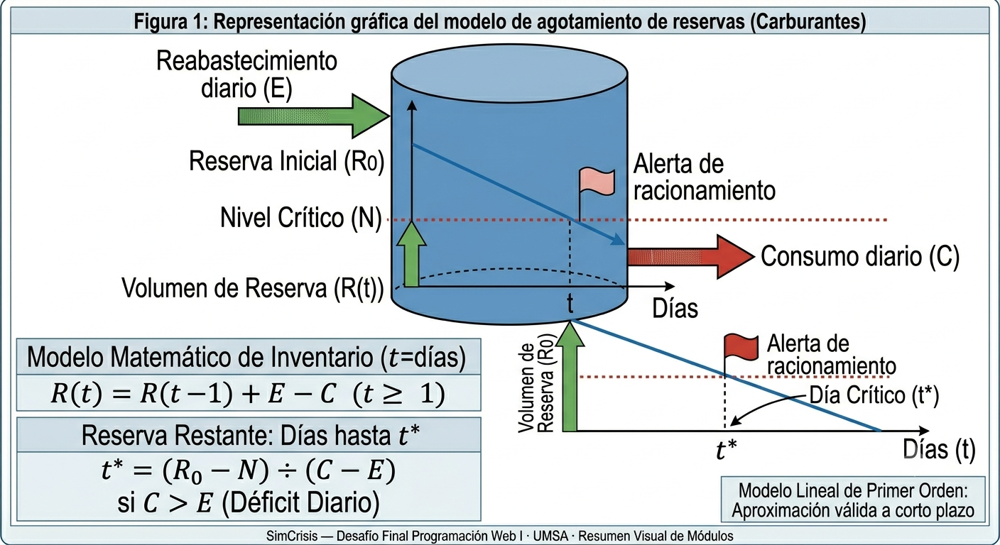
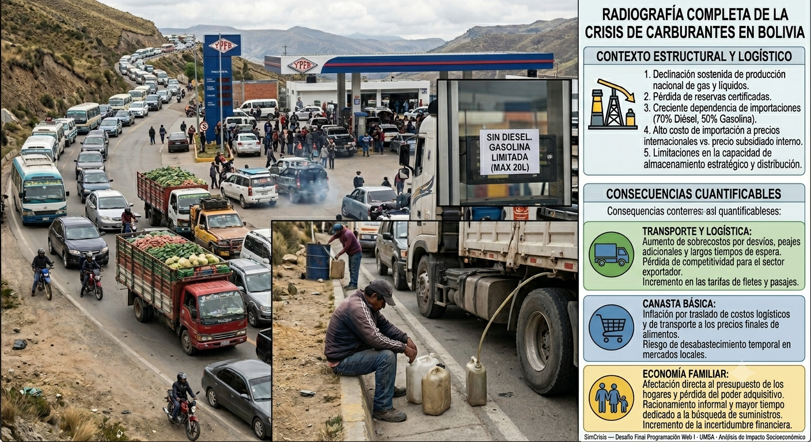

Simulador de Abastecimiento de Carburantes
Modelo matemático de agotamiento de reservas en estaciones de servicio bajo condiciones de desabastecimiento.
Marco Teórico y Contexto
Dinámica del abastecimiento de hidrocarburos en Bolivia
El abastecimiento de carburantes en Bolivia ha experimentado tensiones estructurales derivadas del declive sostenido en la producción de campos gasíferos maduros, la disminución de reservas certificadas y la dependencia creciente de importaciones a precios internacionales que superan ampliamente el precio subsidiado interno. Según datos del sector hidrocarburífero, Bolivia pasó de ser exportador neto de gas y derivados a convertirse en importador de diésel y gasolinas para cubrir la brecha entre producción nacional y demanda interna.
Modelo matemático de reservas
El comportamiento de una reserva de carburante puede modelarse como un sistema dinámico
de primer orden. Si denominamos R(t) a la reserva disponible en el día t,
C al consumo diario y E al reabastecimiento diario, la ecuación
de evolución es:
El día crítico t* en que la reserva toca el nivel mínimo N
se estima como:
Cuando el consumo diario supera al reabastecimiento (C > E), el sistema
es deficitario y la reserva decrece hasta agotar el stock operativo. Si C ≤ E,
el sistema es sostenible indefinidamente. Este modelo lineal es una aproximación válida para
horizontes de corto plazo (días a semanas), donde la variabilidad del consumo es baja.
Nivel crítico y gestión de inventarios energéticos
El concepto de nivel crítico proviene de la teoría de inventarios y representa el umbral mínimo de stock bajo el cual se activan protocolos de contingencia: racionamiento, abastecimiento prioritario a servicios esenciales (hospitales, ambulancias, transporte público) y restricción de ventas al público general. En gestión logística, este nivel equivale al punto de reorden o stock de seguridad.


Simulador Interactivo
Los resultados del cálculo aparecerán aquí.
Caso de Estudio (según PDF — Caso 1)
| Dato | Valor |
|---|---|
| Reserva inicial | 10 000 litros |
| Consumo diario | 1 200 litros/día |
| Reabastecimiento diario | 300 litros/día |
| Nivel crítico | 2 000 litros |
| Resultado esperado | La reserva llega al nivel crítico en ≈ 8,9 días |
Haz clic en "Cargar caso PDF" para autocompletar este escenario y verificar el funcionamiento del simulador.
Conclusiones del Módulo A
Naturaleza exponencialmente crítica del déficit
Cuando la tasa de consumo supera de manera consistente al reabastecimiento, el sistema avanza linealmente hacia el agotamiento sin posibilidad de autorrecuperación. Un déficit neto de 900 litros/día (consumo 1200 − reabasto 300) implica que incluso una reserva de 10 000 litros se agota por debajo del nivel crítico en menos de 9 días. Este comportamiento subraya la importancia de mantener relaciones de reposición sostenibles.
Importancia del nivel crítico como umbral de acción
El modelo matemático demuestra que la diferencia entre el nivel crítico y cero puede ser la ventana temporal para implementar medidas de emergencia. Si el nivel crítico se fija en 2 000 litros con un déficit diario de 900 litros, el margen operativo de emergencia es de apenas 2,2 días adicionales antes del agotamiento total. Los planificadores energéticos deben considerar este margen como un activo estratégico de gestión de riesgo.
Aplicabilidad del modelo a sistemas de inventario complejos
Aunque el modelo lineal propuesto es una simplificación, sus principios se extrapolán directamente a cualquier sistema de inventario con consumo variable y reposición discontinua. La incorporación de varianza estocástica en el consumo diario o de interrupciones discretas en el reabastecimiento son extensiones naturales que aumentarían la precisión predictiva del simulador.